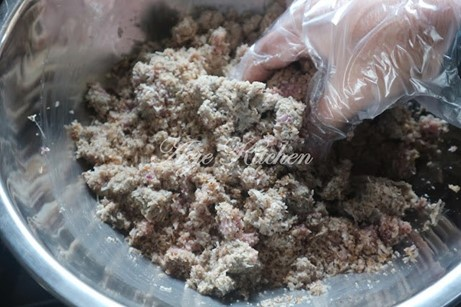
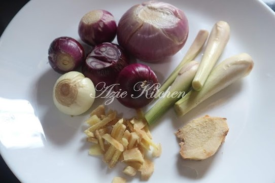
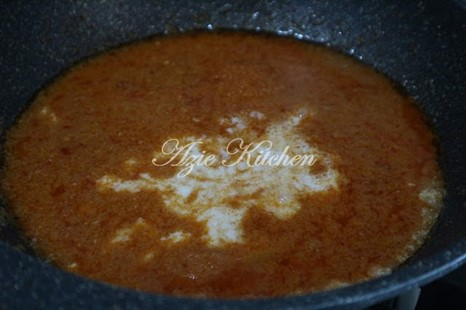

1. Satukan bahan A, B dan C dan gaul rata rata. Masak atas api perlahan sehingga kering dan ringan.

2. Masukkan serbuk lada hitam, gula dan garam secukup rasa.
Nota:
Bahagi kepada beberapa bekas dan simpan dalam freezer. Bila hendak dimakan, keluarkan satu bekas dan gaulkan dengan bawang merah dan serai yang dihiris halus.
1. Bahan A dikisar halus dan ditumis sehingga benar benar naik bau dan terbit minyak. Tambah air dan biarkan lama lama sehingga terbit minyak sekali lagi.


2. Setelah terbit minyak sekali lagi, baru masukkan santan dan bahan bahan B.
3. Renih lama lama atas api perlahan. Apabila kelihatan kering, tambahkan air dan masak lagi bagi memastikan kuahnya benar benar sebati.
Nota:
Kuah tumis kena ada lebih rasa masin.
Jika suka, boleh masukkan sedikit budu. Jika masuk budu, rasakan dulu sebelum dimasukkan garam bagi mengelakkan kuahnya terlebih masin.